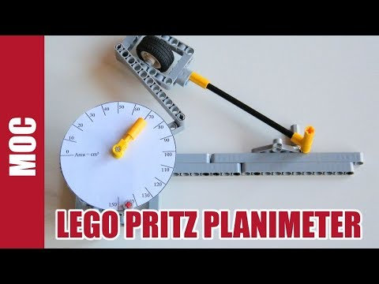

Ein Planimeter ist ein Instrument, mit dem sich der Flächeninhalt einer beliebigen Fläche bestimmen lässt. Es handelt sich um eine Apparatur, die man früher benutzt hat, um z.B. die Flächen von Ländern auf Karten zu bestimmen. Es addiert die Winkel beim Umfahren auf und die Differenz aus dem Winkel beim Start und beim Ende des Umfahrens ist proportional zum Flächeninhalt der umfahrenen Fläche. Nicolas Lespour stellt das Prinzip in einem Blogartikel vor und erklärt mit einer Bauanleitung, wie du dir ein eigenes Planimeter mit Lego-Technik basteln kannst.
Ein tolles Projekt für den Mathematikunterricht, wenn die Integralrechnung thematisiert wird.
